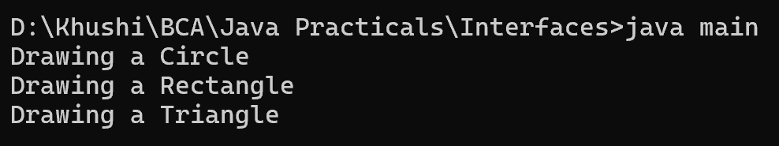

6. Write a Java program to create an interface Drawable with a method draw() that takes no arguments and returns void. Create three classes Circle, Rectangle, and Triangle that implement the Drawable interface and override the draw() method to draw their respective shapes.
interface Drawable {
void draw();
}
class Circle implements Drawable {
@Override
public void draw() {
System.out.println("Drawing a Circle");
}
}
class Rectangle implements Drawable {
@Override
public void draw() {
System.out.println("Drawing a Rectangle");
}
}
class Triangle implements Drawable {
@Override
public void draw() {
System.out.println("Drawing a Triangle");
}
}
class main {
public static void main(String[] args) {
Drawable circle = new Circle();
Drawable rectangle = new Rectangle();
Drawable triangle = new Triangle();
circle.draw();
rectangle.draw();
triangle.draw();
}
}
